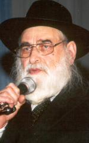

Celebrating the Chag Ha’geula in Prison
A moving story about feeling Geula even in prison. * Presented for the Chag Ha’Geula, 12-13 Tammuz.

***
There was a widespread saying in Russia, “Whoever did not sit in jail, will sit; and whoever sat, will never forget it.” R’ Nosson Berkahn is familiar with Russian prisons. He was sentenced to seven years. He ended up sitting “only” two.
The police searched for him all week. His father-in-law was taken as a hostage. Secret police were posted to watch the house. There was no choice; the situation was unbearable. R’ Nosson turned himself in to the police. He was just a young man, in his first year of marriage.
He was greeted with curses. A humiliating interrogation. Policemen with drawn revolvers escorted him to his house and conducted a thorough search and he was sent back to jail, to a solitary cell.
“I fell on the cement floor and sleep overcame me. I don’t know how long I slept. I was woken up by a strong kick in my back and by the coarse voice of the policeman who brought me a package from home.”
In the package was a loaf of bread, sliced so as not to arouse suspicion that there was a note hidden inside, a cooked dish, a bottle of juice for Havdala on Motzaei Shabbos, machurka made from ground up tobacco stems, and a newspaper cut into pieces with which to make cigarettes. This was on Shabbos.
They left him alone until Monday. One of the policemen kindly offered his services, to take a note from him to his wife. His offer was politely declined; his intentions were quite obvious.
***
He spent ten days there. For one week he was interrogated daily, sometimes twice a day. How difficult was this for him? R’ Nosson himself put it this way, “Ten years in Siberia are very hard. The trial is even harder. And the interrogation is hardest of all.”
He was finally transferred to the jail known by all as the “central barbershop.”
“They took some of us prisoners down to the cellar level cell block, two floors underground. At first glance the ‘room’ looked like a huge swarming nest. The ‘room’ was eighty square meters and it contained sixty prisoners including army officers, party members from the time of the Revolution, managers, kolkhozniks, murderers and thieves. There was even a ten year old who stole half a kilogram of wheat because he was starving.”
There were no windows. There were two air vents in the ceiling under which sat the special characters, the celebrated thieves. The room was crowded, hot and smelly, but Notke’s main worry was his young wife. He remembered that she had not cried when he was arrested. She did not lose her trust. He did not know that right after his arrest she began looking for ways to have him released.
There was a routine to life in prison; getting up, organized going out to use the washroom, a small amount of water with which to wet the face, removing the barrel, cleaning the cell, waiting for a piece of bread that was underbaked and a little water. The inmates were preoccupied with guessing – who would be brought into the cell that day, who would go out, who would receive a package, who would be interrogated?
“In the afternoon I would be afraid, lest I be called for an interrogation. What would they ask, how should I answer, and the main thing – not to mention anyone’s name. It wasn’t easy to be on guard, as the interrogation sometimes lasted as long as ten hours. The interrogator, a major of average height with the glint of a wild animal in his green eyes, did not speak much. He didn’t interrogate much either. Sometimes he read the paper or a book throughout the night. He would stop only four or five times and ask some question which was enough to set the brain spinning to the point of going mad.
“The atmosphere in the interrogation room instilled fear in the prisoner. It was a large room. There were three windows covered by a thick curtain. The interrogator sat at a big desk that had an inkwell, paper, and a revolver on it. I was seated in the center of the room, about four steps from the desk, on the edge of an uncomfortable chair with my hands on my knees. Within ten minutes my feet began to feel tired. It was forbidden to move them. There would be the immediate reaction, ‘Quiet! Don’t disturb!’
“When the torturous night came to an end, the warden rang and two other wardens came in. The interrogator would give me a cigarette and regularly ‘forget’ to give me a match, in order to increase my suffering. The jailers had to help me drag my swollen feet.
“At the beginning of Tammuz the head warden came into my cell. His face was covered with boils. He was an evil man who was always ready to kick someone with his heavy boot or to strike someone with the large key in his hand. Sometimes he did both.
“His appearance struck terror in the hearts of the prisoners. He read names from a list and I was one of them. We had to pack our belongings and go out to the hall.
“I think that at the time my mind was blank. My emotions were also deadened. Prisoners were used to being moved from cell to cell but there was always the fear of the unknown. I could not know, I could not even imagine, what would happen to me within the next few minutes.
“They led us down the endless corridor. An order was given and we were stopped next to one of the cells. The jailer put one of the inmates in there and so on, until we reached cell 229. I did not think this would be my new living quarters. When I looked inside I was surprised. When I saw the prisoners standing in the doorway I almost stopped breathing. I wanted to cry out. There stood R’ Simcha Gorodetzky, my friend. With a split-second glance and a movement of his hand he motioned to me not to reveal that we knew one another.”
Ten steps in the length and six in the width; that was the size of the cell. No furnishings. The “tenants” were four thieves. One of them was in charge, giving out spots to new prisoners and also helping himself and his friends to the lion’s share of every package a prisoner received from home. Aside from them there was a murderer, one kolkhoznik and the two Chassidim.
“At first we made it seem as though we were strangers. Little by little, we began talking to one another. R’ Simcha is a great person. Aside from his scholarship, cleverness and Chassidic piety, he is a pleasant person. Even hardened criminals respected him. Thanks to him, I also enjoyed better treatment.
“R’ Simcha, as a veteran prisoner, taught me how to save water for netilas yadayim in the morning and for a meal. He taught me the ‘halachos of jail’ with an emphasis on the fact that even here a Jew is not exempt from having set times for Torah. If you don’t remember all of T’hillim by heart, review the chapters you remember and they will count as though you said the entire book.
“Listening to R’ Simcha daven, I felt how good it was to be a Jew. He davened quietly and only occasionally raised his pleasant voice at a certain section, which pierced the heart.
“Our entire existence is solely in order ‘to give praise to Your holy name.’ If so, what do you care where you are, outside the walls or within? His parables and stories were meaningful. From everything that occurred around him he knew how to learn a lesson in Avodas Hashem.
“R’ Simcha completely negated sadness. We must always be happy! He would ask: What don’t you like here? The conditions, the filth, the stench? Have you considered that we, with our bad deeds, place the King’s head in filth? Are you concerned about His anguish?
“One day I realized that something had changed with R’ Simcha over the past few days. He was more closed and cried a lot when he davened. His behavior affected me too. When I finally asked him, he said that it would soon be 12 Tammuz, the Rebbe’s Chag Ha’Geula, and he was preparing for a spiritual yechidus with the Rebbe. On Erev 12 Tammuz he prepared all day for this ‘yechidus,’ and fasted all day.
“Said R’ Simcha, ‘Before the Rebbe left the country, he said that nothing would separate between him and his talmidim and mekusharim. There are no locks and bars! There is no barrier! The Rebbe is with us now too and I am sure he will find a way to respond to all my questions in yechidus.’
“He quietly began singing the niggun of R’ Michel of Zlotchov with such yearning that I too began to see the Rebbe in my mind’s eye. My first yechidus was when I went in with my grandfather as a boy, and the Rebbe placed his holy hands on my head and blessed me. Here, the Rebbe enters … wearing his shtraimel, the room full of Chassidim … The Rebbe sits at the head of the table, tying a handkerchief around his finger and saying Chassidus … utter silence. Only the Rebbe’s voice is heard, penetrating the hearts of all, even those who do not understand …
“Another picture comes to mind, of Simchas Torah. The Rebbe coming out to hakafos and dancing with his sons-in-law … The house full of people, all trying to draw ruach ha’kodesh … and the Rebbe at the airport in Riga, asking all of us to unite in brotherly love, in the observance of Torah and mitzvos. The plane takes off. Rebbe, Rebbe! When will we see one another again?
“We said l’chaim in honor of the Chag Ha’Geula over water. R’ Simcha told the story of the Rebbe’s arrest and release in great detail along with various anecdotes.
“Gut Yom Tov, Gut Yom Tov.
“L’shana HaBaa with the Rebbe!”
Menachem Ziegelboim. "Celebrating the Chag Ha’geula in Prison." Beis Moshiach, no. 884 (June 20, 2013).